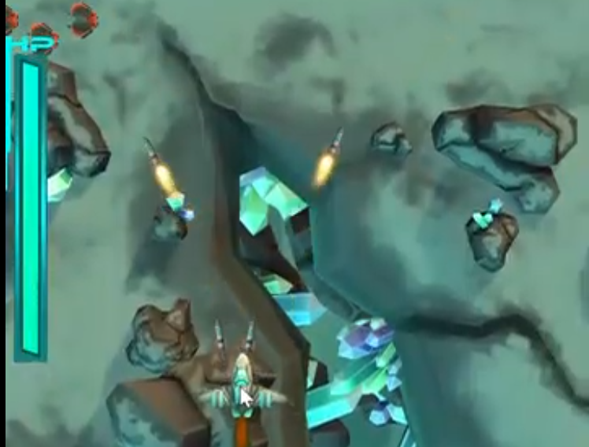

Role
Gameplay Programmer
Team
5 people
Duration
9 weeks
The Game
Astral Drift is a shoot-em-up game where the player controls a spaceship and fights against waves of enemies in space, whilst slowly upgrading their ship. The game features a variety of enemy types, power-ups, and challenging boss battles.
My Contribution
- Created a design document for current and new weapons/enemies
- Implemented a few unique weapon fusions
- Modelled the new fusion weapons
What I Learned
I learned a lot about working in an existing project, adding things onto it without breaking the existing code. I also got a lot more used to working with Blender for modelling purposes. Furthermore, I learned quite a bit about the design process, and then how to implement those designs into the game. Lastly, I improved a lot on how to work in a team, and how to communicate effectively with my team members.